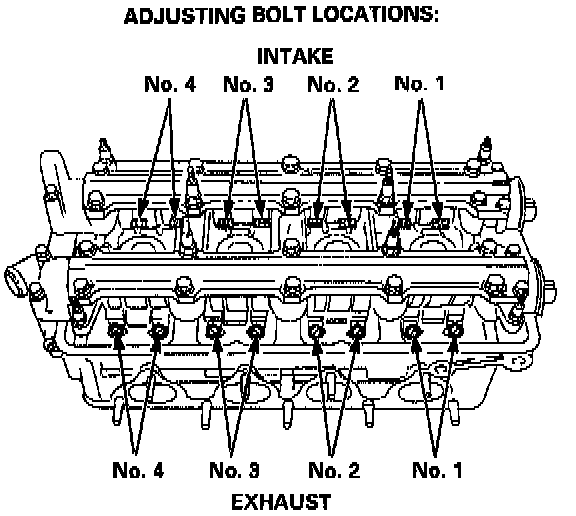
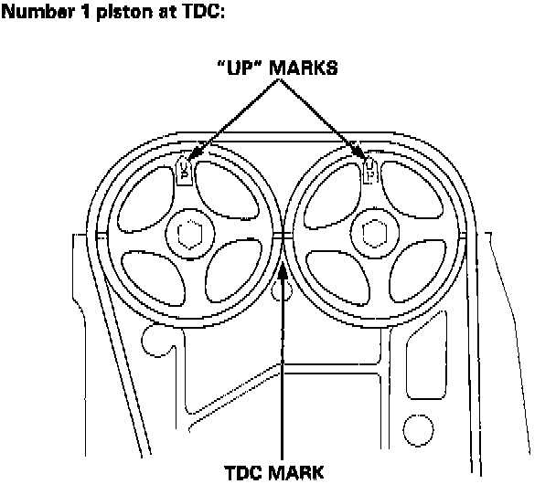
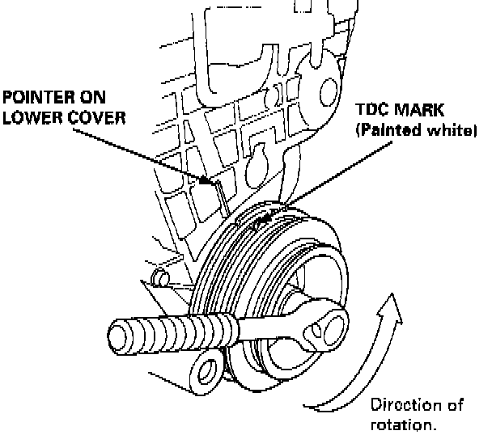
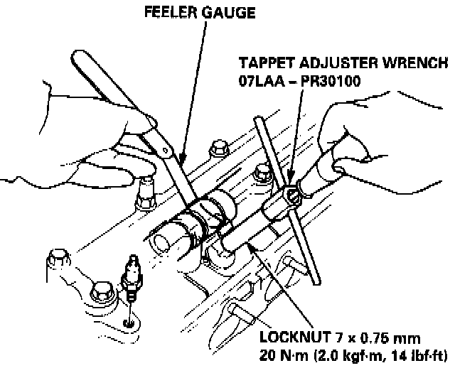
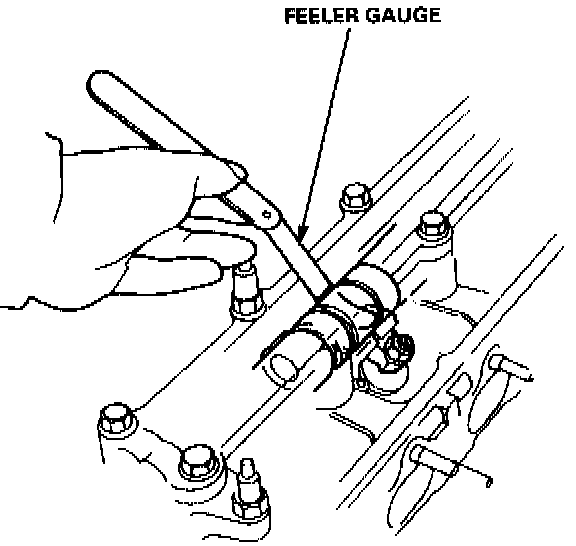
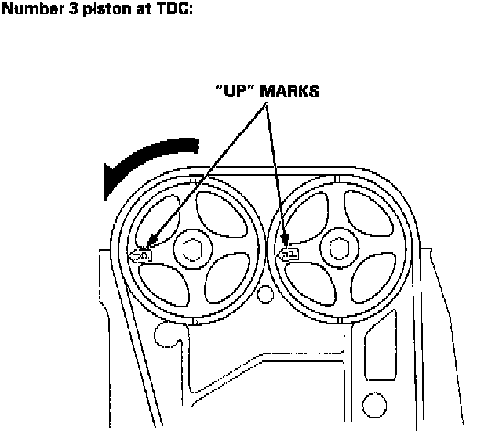
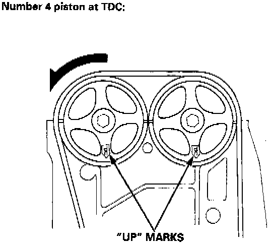
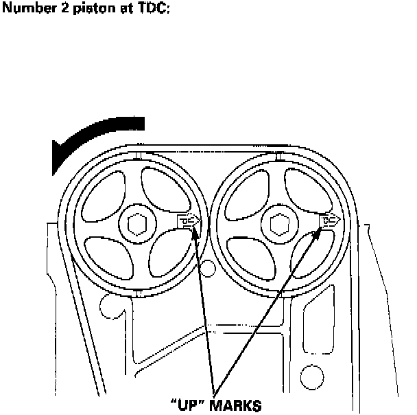

Valve Clearance: Adjustments
VALVE ADJUSTMENT
Clearance B18C1 Eng:
Intake: 0.15 - 0.19 mm (0.006 - 0.007 in)
Exhaust: 0.17 - 0.21 mm (0.007 - 0.008 in)
NOTE:
^ Valves should be adjusted cold; at a cylinder head temperature of less than 100°F (38°C).
^ Adjustment is the same for intake and exhaust valves.
^ After adjusting, retorque the crankshaft pulley bolt to 177 Nm (130 ft.lbs.).
1. Remove cylinder head cover.


2. Set No.1 piston at TDC. "UP" mark on the pulley should be at top, and TDC grooves on the pulley should align with the pointer on back cover. TDC grooves (white paintl on the crankshaft pulley should align with pointer on the timing belt lower cover.
3. Adjust valve clearance on No.1 cylinder.

4. Loosen the locknut and turn the adjusting screw until feeler gauge slides back and forth with a slight amount of drag.

5. Tighten the locknut and recheck clearance again. Repeat adjustment if necessary.

6. Rotate the crankshaft 180° counterclockwise (camshaft pulley turns 90°). The "UP" mark should be on the exhaust side.
Adjust valves on No.3 cylinder.

7. Rotate crankshaft 180° counterclockwise to bring No.4 piston to TDC. The "UP" mark should be pointing straight down.
Adjust valves on No.4 cylinder.

8. Rotate crankshaft 180° counterclockwise to bring No.2 piston to TDC. The "UP" marks should be on the intake side.
Adjust valves on No.2 cylinder.